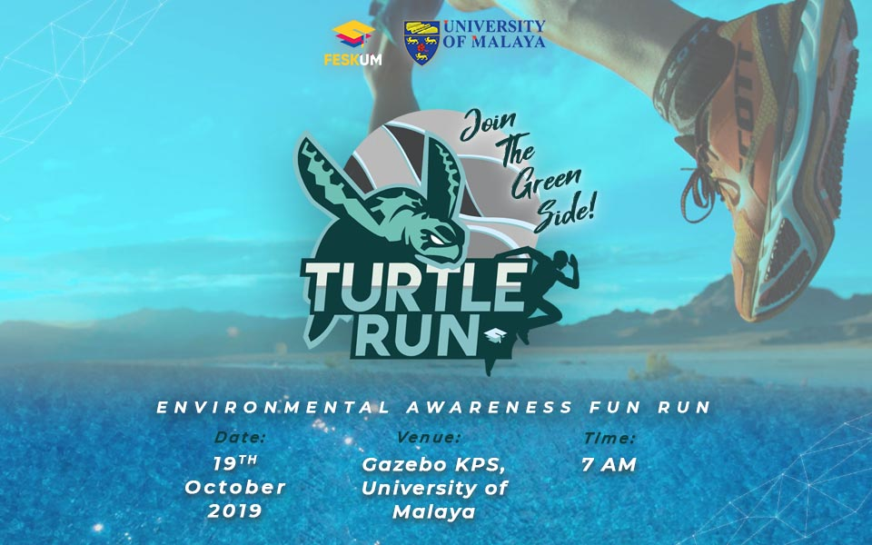

Turtle Run is a family-friendly event that involves road running with participants taking part for their own enjoyment, especially nature lovers! Although Turtle Run is a fun run mainly focused on spreading awareness, we also have exciting prizes waiting for the more competitive lot who manage to come out on top.
| Organiser | Fifth Residential College |
|---|---|
| Date | 1 January 2021 |
| Venue | University of Malaya |
| Time | 6:00AM - 11:00AM |
| Categories | Sports |
| Website / Social Media | https://www.instagram.com/turtlerun19/ |
For more enqueries, please contact the organizer at abc@gmail.com or Ms. Lily (012-3456789).